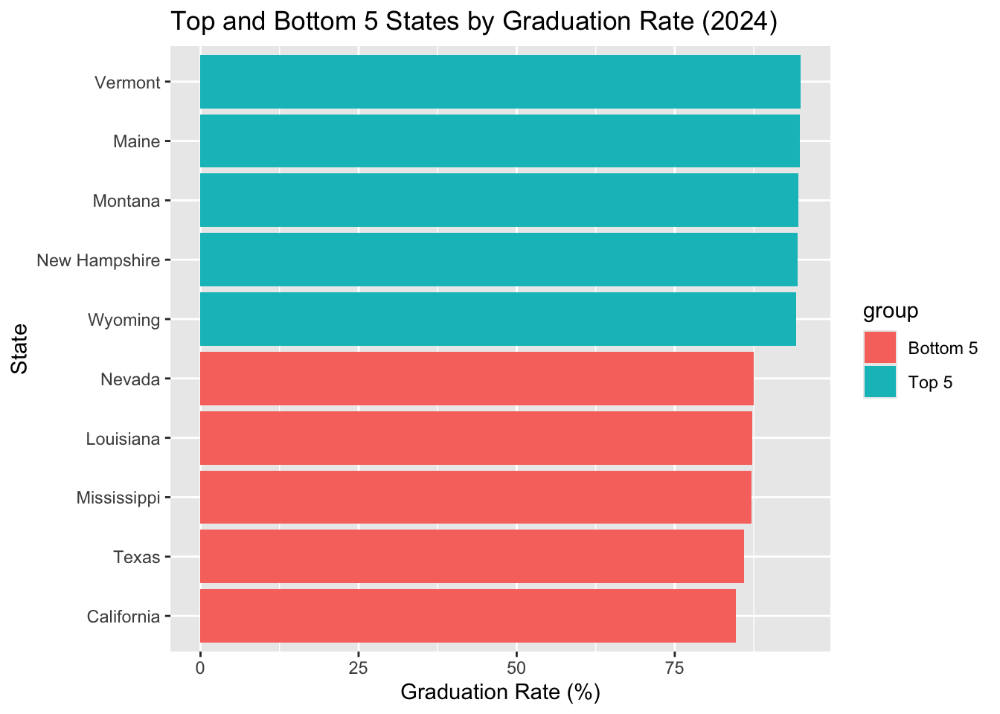
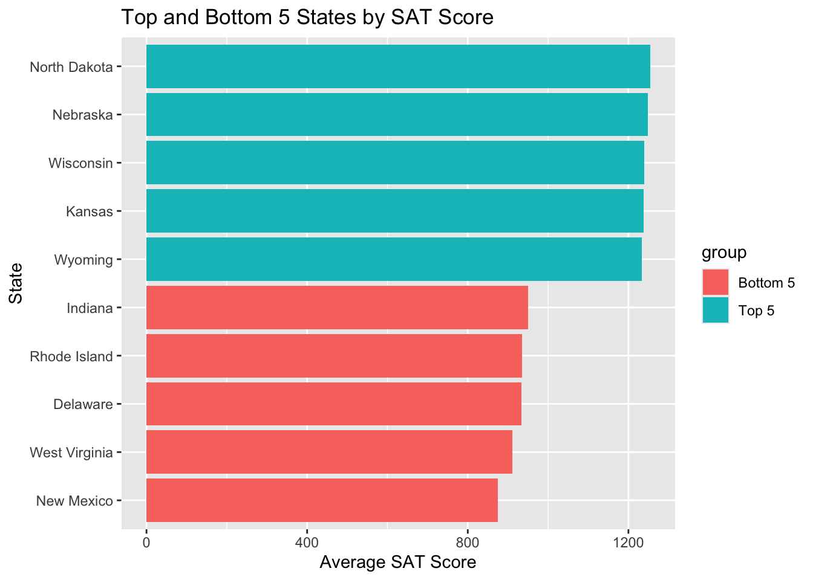

For this project, I plan to work with three independent education-related datasets that can be linked together using the state as a common identifier. The datasets will focus on high school graduation rates, state-level SAT scores, and state-level public education funding. Although each dataset will be analyzed separately as required by the assignment, they all relate to educational outcomes and provide an opportunity to explore broader relationships between academic performance, graduation rates, and school funding.
The goal of this project is to demonstrate how to transform wide-format data into tidy data using the tidyr and dplyr packages in R. After tidying each dataset, I will perform exploratory analyses, create summary tables, and develop visualizations that highlight patterns within each dataset. Finally, I will combine the tidy datasets to investigate whether states with higher education funding also tend to have higher SAT scores and graduation rates.
Proposed Approach
Dataset 1: High School Graduation Rates
The first dataset will contain high school graduation rates by state. Since educational datasets are often stored in wide format, with years as separate columns, I expect to use pivot_longer() to transform the data into a tidy structure, where each row represents a state-year observation.After tidying the data, I will create summary tables showing graduation rates by state and identify the states with the highest graduation rates. I will also develop visualizations, such as bar charts, to compare graduation rates across states and highlight the highest-performing states.
Dataset 2: SAT Scores by State
The second dataset will contain SAT scores by state. Similar to the graduation dataset, I expect the data may require reshaping and standardizing variable names before analysis.Once the data has been tidied, I will calculate summary statistics and identify which states have the highest average SAT scores. I will then create visualizations to compare SAT performance across states and identify notable patterns or trends.
Dataset 3: Public Education Funding
The third dataset will focus on public education funding by state, including per-pupil expenditures and total education spending. This dataset may contain multiple funding categories that will need to be transformed into a tidy format. After cleaning and restructuring the data, I will create summary tables showing the states with the highest education spending and generate visualizations that compare funding levels across states.
Combined Analysis
After completing the required analysis for each dataset, I plan to merge the three tidy datasets using the state as the common key. This additional analysis will allow me to explore potential relationships among education funding, SAT scores, and graduation rates.
Specifically, I will investigate questions such as:
Do states with higher education funding tend to have higher SAT scores?
Do states with higher graduation rates also have higher SAT scores?
Is there a relationship between education spending and graduation rates?.
Expected Challenges
One challenge will be ensuring that all three datasets use a consistent state identifier. Some datasets may use full state names while others may use abbreviations, requiring additional data cleaning before the datasets can be merged.
.
Running Code
When you click the Render button a document will be generated that includes both content and the output of embedded code. You can embed code like this:
library(tidyverse)
── Attaching core tidyverse packages ──────────────────────── tidyverse 2.0.0 ──
✔ dplyr 1.2.1 ✔ readr 2.2.0
✔ forcats 1.0.1 ✔ stringr 1.6.0
✔ ggplot2 4.0.3 ✔ tibble 3.3.1
✔ lubridate 1.9.5 ✔ tidyr 1.3.2
✔ purrr 1.2.2
── Conflicts ────────────────────────────────────────── tidyverse_conflicts() ──
✖ dplyr::filter() masks stats::filter()
✖ dplyr::lag() masks stats::lag()
ℹ Use the conflicted package (<http://conflicted.r-lib.org/>) to force all conflicts to become errors
Rows: 5 Columns: 53
── Column specification ────────────────────────────────────────────────────────
Delimiter: ","
chr (1): state
dbl (52): Vermont, Maine, Montana, New Hampshire, Wyoming, North Dakota, Min...
ℹ Use `spec()` to retrieve the full column specification for this data.
ℹ Specify the column types or set `show_col_types = FALSE` to quiet this message.
grad_chart <-bind_rows( top5_grad %>%mutate(group ="Top 5"), bottom5_grad %>%mutate(group ="Bottom 5"))ggplot( grad_chart,aes(reorder(state, highschool_2024), highschool_2024,fill = group )) +geom_col() +coord_flip() +labs(title ="Top and Bottom 5 States by Graduation Rate (2024)",x ="State",y ="Graduation Rate (%)" )

Dataset 2: SAT Scores
The SAT dataset was also provided in a wide format where states were stored as columns and SAT measures were stored as rows. The dataset was transposed so that each state became an observation. The resulting dataset was then converted into a tidy format where SAT metrics and values were represented consistently.
Rows: 4 Columns: 54
── Column specification ────────────────────────────────────────────────────────
Delimiter: ","
chr (54): State, Alabama, Alaska, Arizona, Arkansas, California, Colorado, C...
ℹ Use `spec()` to retrieve the full column specification for this data.
ℹ Specify the column types or set `show_col_types = FALSE` to quiet this message.
ggplot( sat_chart,aes(reorder(state, total_mean_score), total_mean_score,fill = group )) +geom_col() +coord_flip() +labs(title ="Top and Bottom 5 States by SAT Score",x ="State",y ="Average SAT Score" )

Dataset 3: School Funding The education funding dataset contained states as columns and funding categories as rows. Similar to the previous datasets, the data was transposed so that states became observations. The funding measures were then standardized and converted to numeric values after removing currency symbols.
Rows: 2 Columns: 52
── Column specification ────────────────────────────────────────────────────────
Delimiter: ","
chr (52): State, Alabama, Alaska, Arizona, Arkansas, California, Colorado, C...
ℹ Use `spec()` to retrieve the full column specification for this data.
ℹ Specify the column types or set `show_col_types = FALSE` to quiet this message.